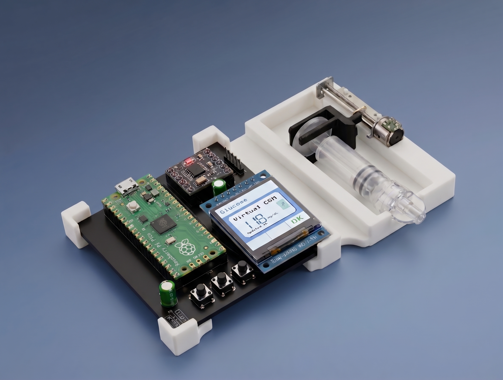

Hardware Designed to Be Understood
The IINTS MK.2 is an open-source insulin pump prototype built to show how the mechanics, electronics, and interface work from the inside out.

Built to Be Understood
Medical technology often asks people to trust systems they cannot inspect or fully understand. IINTS MK.2 takes a different approach by making its hardware, software, and design decisions visible, open to exploration, questions, and improvement.
At the same time, its interface is shaped around clarity, predictability, and different ways of processing information.
Transparent by Design
Components, connections, and mechanisms remain visible and documented, making it easier to understand how the prototype operates.
Cognitive Accessibility
The interface explores predictable navigation, clear information hierarchy, and the reduction of unnecessary complexity, without assuming that everyone interacts with technology in the same way.
Open for Exploration
Hardware files, software, and design decisions are shared openly to support learning, inspection, and constructive feedback.
Four Inspectable Subsystems
IINTS MK.2 brings its electronics and mechanical components together in four inspectable subsystems. This modular structure makes the prototype easier to understand, assemble, modify, and reproduce for research and education.
Processing & Carrier PCB
A Raspberry Pi Pico provides the main processing platform. The custom carrier PCB brings together the motor driver, display connections, physical controls, and power connections in one inspectable assembly.
- Raspberry Pi Pico (RP2040 Dual-Core @ 133 MHz)
- Custom two-layer carrier PCB
- Dedicated modular connectors for each subsystem
Controlled Actuation
A compact linear stepper motor uses a threaded lead screw to move the reservoir plunger in controlled increments. Its position within the enclosure is maintained by a custom 3D-printed alignment structure.
- Linear stepper motor with threaded lead screw
- DRV8833 dual H-bridge motor driver
- Step-based software control with alignment cradle
Display & Physical Interface
A 240 × 240 px colour display is combined with three physical buttons. The interface explores predictable navigation, clear visual hierarchy, and reduced interaction complexity.
- 240 × 240 px ST7789 TFT display panel
- Consistent three-button navigation
- Clear visual hierarchy and structured feedback
Power & Enclosure
A rechargeable lithium-polymer battery supplies the prototype through a dedicated power connection. The components are housed in a modular 3D-printed enclosure designed to support assembly, inspection, and further experimentation.
- 3.7 V rechargeable lithium-polymer battery (~1,800 mAh)
- Dedicated two-pin power connector
- Modular 3D-printed chassis and mounting brackets
Physical Prototype in Detail
A visual overview of the 3D-printed chassis, display interface, and linear actuation system. Click any photo to enlarge.


Photographs of the physical IINTS MK.2 prototype, enhanced using AI tools.
Inspect, Reproduce, Improve
The project is documented openly so that its architecture and design decisions can be examined, reproduced, and discussed.
PCB Design & Schematics
Design files and schematics for the custom carrier board are being documented for inspection and reproducible fabrication.
3D-Printed Mechanics
Printable models for the motor cradle, syringe alignment cradle, and modular enclosure.
MicroPython Firmware
Open-source embedded code managing step actuation, display rendering, and button state machines.
An Evolving Research Prototype
IINTS MK.2 is still evolving through experimentation, feedback, and practical testing. Its current design represents a direction for further research rather than a finished or clinically validated solution.
IINTS MK.2 is an educational research prototype and is not a certified medical device or intended for therapeutic insulin delivery.